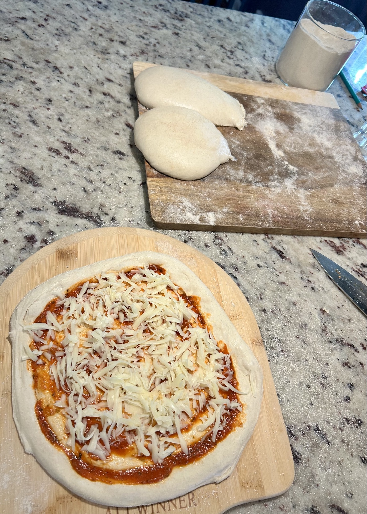
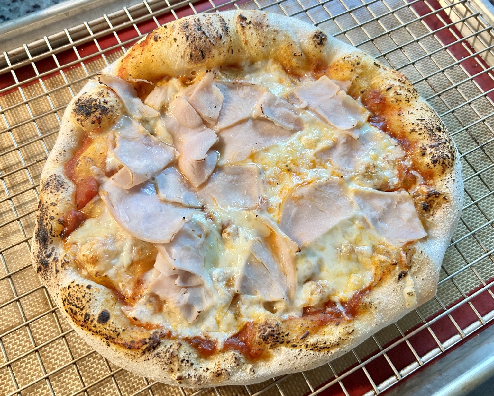
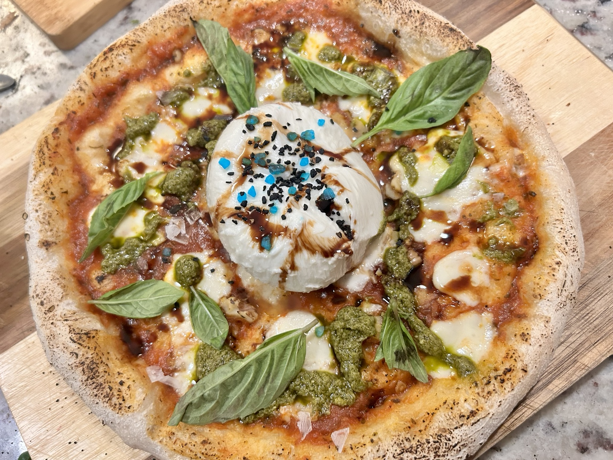

Main
Neapolitan Pizza
A simple home Neapolitan-style pizza built around a soft, well-fermented dough.




Ingredients
Dough
- 600 g type 00 flour
- 384 g water
- 15 g salt
- 2 g instant yeast
To finish
- Crushed tomatoes, lightly salted
- Mozzarella
- Extra-virgin olive oil
- Fresh basil, if available
Method
- Mix the flour and water until no dry flour remains. Add the yeast and salt and work the dough until evenly combined.
- During the early fermentation, stretch and fold the dough several times to build strength.
- Leave the dough covered on the counter for 1–2 hours.
- Keep it as one large ball, cover well, and proof in the refrigerator for 48 hours.
- Take the dough from the refrigerator, divide into 5 equal balls, shape gently, and let them relax before baking.
- Heat a pizza steel or stone as hot as the oven will allow.
- Open each ball by hand, keeping air in the rim. Add a thin layer of tomato and a restrained amount of mozzarella.
- Bake until the rim is blistered and browned and the base is well cooked. Finish with olive oil and basil.
Serving
Eat immediately, one pizza at a time, straight from the oven.
Notes
The key here is the long cold bulk fermentation: 1–2 hours on the counter first, then the dough stays as one large ball in the refrigerator for 48 hours before being divided into five pizza balls.
← Back to recipes